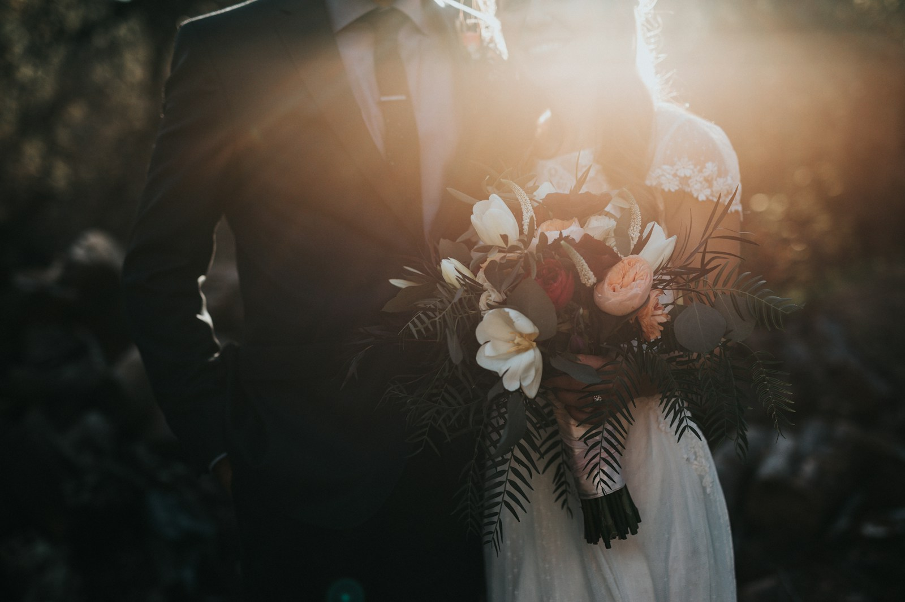
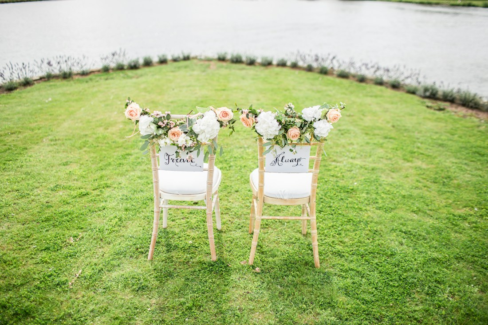

MEMORIES, MADE INTO STORIES.
Setiap momen,
punya cahayanya.
Untuk hari yang dirayakan.
Untuk cerita yang ingin kamu simpan.
RUANG UNTUK CERITAMU
Satu studio.
Banyak bab kehidupan.
SELECTED VISUAL STUDIES
Cerita yang
tetap menyala.
Kumpulan studi visual dan materi contoh.
Foto stok berlisensi, bukan karya klien Lentera.
FOTO CONTOH BERLISENSI / ANIMASI JUDUL ORISINAL / TANPA KLAIM PROYEK NYATA
GOOD STORIES START HERE
Mulai dari
paket yang pas.
Harga dan cakupan berikut adalah ilustrasi desain.
Belum termasuk biaya yang belum dikonfirmasi.
Bukan penawaran, ketersediaan, atau kontrak.

LIGHT / FEELING / MEMORYFOTO REFERENSI — BUKAN PROYEK KLIEN
DI BALIK LENTERA
Bukan hanya
bagaimana terlihat.
Tapi bagaimana terasa.
Dalam konsep studio ini, kami membayangkan dokumentasi yang dekat, hangat, dan tidak memaksakan cerita. Ruang untuk menjadi diri sendiri—lalu membiarkan momen berbicara.
Lentera di halaman ini adalah konsep web dari brief, bukan bukti studio aktif, tim, pengalaman, penghargaan, atau klien. Identitas layanan dan kontak resmi belum diverifikasi.
CONTOH TESTIMONI
Suara yang
ingin kami dengar.
Kutipan ilustratif untuk pratinjau tata letak.
Bukan ulasan atau pernyataan pelanggan nyata.
“Foto yang terasa seperti kami. Hangat, apa adanya, dan ingin dilihat lagi.”
SEBELUM KITA BERCERITA
Masih ada
yang ingin ditanya?
Apakah karya dan testimoni ini proyek nyata?
Tidak. Foto berasal dari materi contoh berlisensi, film adalah animasi judul asli, dan kutipan ditandai ilustratif. Halaman ini tidak mengklaim klien atau proyek yang belum diverifikasi.
Bagaimana cara memilih paket?
Pilih kategori dan lihat cakupan contoh. Tombol pilih paket membuka formulir lokal untuk menyusun pesan dan estimasi dasar. Pajak, perjalanan, vendor tambahan, serta ketersediaan belum ditentukan.
Apakah tombol WhatsApp langsung menghubungi studio?
Nomor resmi belum tersedia. Setelah menyusun draft, tautan WhatsApp membuka pemilih penerima milik WhatsApp. Kamu memilih sendiri penerimanya. Tidak ada pesan yang dikirim otomatis dan tidak ada booking yang dikonfirmasi.
Apakah data formulir disimpan atau diunggah?
Tidak. Formulir hanya ada di memori tab dan hilang saat ditutup. Kamu dapat menyalin atau mengunduh draft. Hanya jika menekan tautan WhatsApp, isi draft diteruskan ke layanan WhatsApp.
LET'S MAKE SOMETHING WORTH KEEPING.
Ceritamu berikutnya,
kita mulai dari sini.
Formulir lokal · tanpa pembayaran · belum ada reservasi